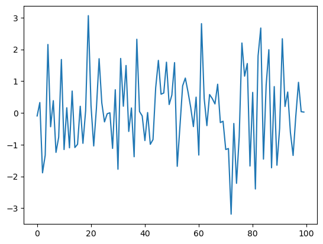
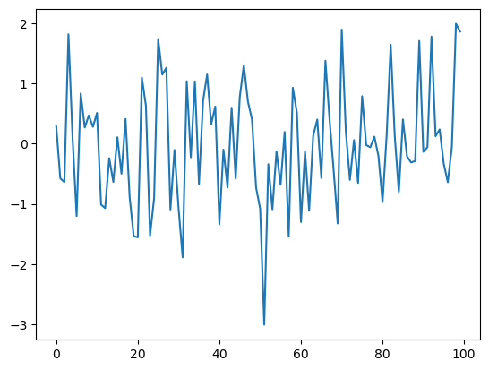
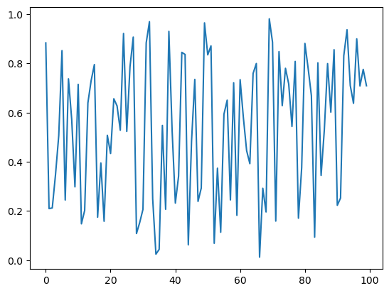
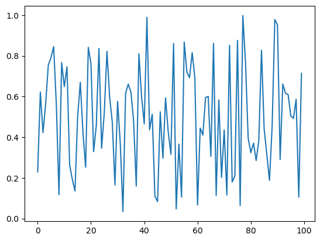

2. Functions#
2.1. Overview#
മിക്കവാറും എല്ലാ programming languages-ഉം provide ചെയ്യുന്ന വളരെ useful ആയ ഒരു programming construct ആണ് functions.
നമ്മൾ ഇതിനകം പല functions-ഉം കണ്ടുകഴിഞ്ഞു. ഉദാഹരണത്തിന്,
NumPy-യിലെ
sqrt()functionPython-ൽ, built-in ആയി ലഭിക്കുന്ന
print()function
ഈ lecture-ൽ നമ്മൾ ചെയ്യാൻ പോകുന്ന കാര്യങ്ങൾ:
Functions-നെ systematic ആയി പഠിക്കുന്നു; അവയുടെ syntax-ഉം, use-cases-ഉം മനസ്സിലാക്കുന്നു.
സ്വന്തമായി user-defined functions എങ്ങനെ build ചെയ്യാമെന്ന് പഠിക്കുന്നു.
ഇതിനായി നമ്മൾ താഴെ കാണുന്ന imports ഉപയോഗിക്കും.
import numpy as np
import matplotlib.pyplot as plt
2.2. Function Basics#
ഒരു program-ന് ഉള്ളിൽ, ഒരു specific task implement ചെയ്യുന്ന ഒരു section ആണ് function. ഈ section-നെ നമ്മൾ ഒരു പേരിട്ടു വിളിക്കുന്നു.
Already exist ചെയ്യുന്ന ധാരാളം functions ഉണ്ട്. അവയെ നമുക്ക് അതേപടി ഉപയോഗിക്കാൻ പറ്റും.
ആദ്യമേ നമുക്ക് already exist ചെയ്യുന്ന functions-നെ review ചെയ്യാം. എന്നിട്ട് നമുക്ക് സ്വന്തമായി functions എങ്ങനെ build ചെയ്യാമെന്ന് നോക്കാം.
2.2.1. Built-In Functions#
import ചെയ്യാതെ തന്നെ ഉപയോഗിക്കാനാകുന്ന നിരവധി built-in functions Python-ൽ ഉണ്ട്.
ഇവയിൽ ചിലത് നമ്മൾ already കണ്ടുകഴിഞ്ഞു:
max(19, 20)
20
print('foobar')
foobar
str(22)
'22'
type(22)
int
Python-ലെ built-in functions-ന്റെ full list ഇവിടെ കാണാം.
2.2.2. Third Party Functions#
Built-in functions മാത്രം ഉപയോഗിച്ച് നമുക്ക് ആവശ്യമുള്ളത് ചെയ്യാൻ കഴിയുന്നില്ലെങ്കിൽ, ഒന്നുകിൽ മറ്റുള്ള functions-നെ import ചെയ്യേണ്ടി വരും, അല്ലെങ്കിൽ സ്വന്തമായി functions create ചെയ്യേണ്ടി വരും.
Functions-നെ import ചെയ്ത് ഉപയോഗിക്കുന്ന examples നമ്മൾ previous lecture-ൽ കണ്ടിരുന്നു.
തന്നിരിക്കുന്ന വർഷം leap year ആണോ അല്ലയോ എന്ന് test ചെയ്യുന്ന മറ്റൊരു ഉദാഹരണം താഴെ കാണാം:
import calendar
calendar.isleap(2024)
True
2.3. Defining Functions#
പല അവസരങ്ങളിലും, നമുക്ക് സ്വന്തമായി functions-നെ define ചെയ്യാൻ കഴിയുന്നത് വളരെ useful ആണ്.
അത് എങ്ങനെ ചെയ്യാമെന്ന് നമുക്ക് നോക്കാം.
2.3.1. Basic Syntax#
\(f(x) = 2 x + 1\) എന്ന mathematical function implement ചെയ്യുന്ന വളരെ simple ആയ ഒരു Python function താഴെ കാണാം:
def f(x):
return 2 * x + 1
നമ്മൾ ഈ function-നെ define ചെയ്ത സ്ഥിതിക്ക്, ഇനി അതിനെ call ചെയ്ത്, നമ്മൾ expect ചെയ്യുന്നത് പോലെ ആ function പ്രവർത്തിക്കുന്നുണ്ടോ എന്ന് നോക്കാം.
f(1)
3
f(10)
21
കുറച്ചുകൂടി നീളമുള്ള ഒരു function നമുക്ക് താഴെ കാണാം. ഈ function ഉപയോഗിച്ച്, തന്നിരിക്കുന്ന ഒരു number-ന്റെ absolute value compute ചെയ്യാൻ സാധിക്കുന്നു.
(Absolute value compute ചെയ്യുന്ന ഒരു built-in function already exist ചെയ്യുന്നുണ്ട്. പക്ഷേ exercise-ന് വേണ്ടി നമുക്ക് സ്വന്തമായി ഒരു function എഴുതി നോക്കാം.)
def new_abs_function(x):
if x < 0:
abs_value = -x
else:
abs_value = x
return abs_value
ഇവിടുത്തെ syntax നമുക്ക് review ചെയ്യാം:
ഒരു function definition തുടങ്ങാൻ ഉപയോഗിക്കുന്ന Python keyword ആണ്
def.def new_abs_function(x):എന്നത് indicate ചെയ്യുന്നത്, function-ന്റെ namenew_abs_functionഎന്നാണെന്നും, അതിന്xഎന്ന ഒരൊറ്റ argument ഉണ്ടെന്നുമാണ്.Indent ചെയ്തിരിക്കുന്ന code-നെ, function body എന്ന് വിളിക്കുന്നു.
ഈ function-നെ call ചെയ്ത code-ലേക്ക്,
abs_valueആണ് return ചെയ്യേണ്ടത് എന്ന്returnkeyword indicate ചെയ്യുന്നു.
ഈ function definition മുഴുവനും Python interpreter വായിച്ച്, അതിനെ memory-യിൽ store ചെയ്യുന്നു.
ഈ function ശരിയായി work ചെയ്യുന്നുണ്ടോ എന്ന് check ചെയ്യാൻ, അതിനെ call ചെയ്ത നോക്കാം.
print(new_abs_function(3))
print(new_abs_function(-3))
3
3
ശ്രദ്ധിക്കുക, ഒരു function-ൽ എത്ര return statements വേണമെങ്കിലും ഉണ്ടാകാം; ഒന്നും ഇല്ലാതെയും ഇരിക്കാം.
ഒരു function പ്രവർത്തിക്കുമ്പോൾ ആദ്യം എത്തിച്ചേരുന്ന return statement execute ചെയ്താൽ, ആ function-ന്റെ execution അവിടെ അവസാനിക്കും. അതിനാൽ താഴെ കാണുന്നതുപോലുള്ള code എഴുതാൻ സാധിക്കുന്നു:
def f(x):
if x < 0:
return 'negative'
return 'nonnegative'
(Multiple return statements ഉള്ള functions എഴുതുന്നത് സാധാരണയായി discourage ചെയ്യപ്പെടുന്നു. അങ്ങനെ ചെയ്താൽ, function-ന്റെ logic follow ചെയ്യാൻ ബുദ്ധിമുട്ടാക്കും.)
Return statement ഇല്ലാത്ത functions, automatically ഒരു പ്രത്യേക Python object ആയ None return ചെയ്യുന്നു.
2.3.2. Keyword Arguments#
ഒരു previous lecture-ൽ, നിങ്ങൾ ഈ statement കണ്ടിരുന്നു:
plt.plot(x, 'b-', label="white noise")
Matplotlib-ന്റെ plot function-നെ call ചെയ്യുമ്പോൾ, അവസാനത്തെ argument name=argument എന്ന syntax-ൽ pass ചെയ്യുന്നത് ശ്രദ്ധിക്കുക.
ഇതിനെ keyword argument എന്ന് വിളിക്കുന്നു. label ആണ് ഇവിടെ keyword.
Order അനുസരിച്ച് അർത്ഥം നിശ്ചയിക്കപ്പെടുന്നതിനാൽ, non-keyword arguments-നെ positional arguments എന്ന് വിളിക്കുന്നു.
plot(x, 'b-')differs fromplot('b-', x)
ഒരു function-ന് ധാരാളം arguments ഉള്ളപ്പോൾ, keyword arguments പ്രത്യേകിച്ചും ഉപയോഗപ്രദമാണ്. കാരണം ശരിയായ order ഓർത്തിരിക്കാൻ ബുദ്ധിമുട്ടായേക്കാം.
User-defined functions-ലും keyword arguments നിങ്ങൾക്ക് ഒരു ബുദ്ധിമുട്ടും കൂടാതെ adopt ചെയ്യാം.
അടുത്ത example, ഇതിന്റെ syntax illustrate ചെയ്യുന്നു:
def f(x, a=1, b=1):
return a + b * x
f-ന്റെ definition-ൽ നമ്മൾ നൽകിയിരിക്കുന്ന keyword argument values, default values ആയി മാറുന്നു.
f(2)
3
താഴെ കാണുന്ന രീതിയിൽ അവയെ modify ചെയ്യാം:
f(2, a=4, b=5)
14
2.3.3. The Flexibility of Python Functions#
Previous lecture-ൽ നമ്മൾ discuss ചെയ്തതുപോലെ, Python functions വളരെ flexible ആണ്.
പ്രത്യേകിച്ചും
തന്നിരിക്കുന്ന ഒരു file-ൽ എത്ര functions വേണമെങ്കിലും define ചെയ്യാം.
Functions-നെ മറ്റൊരു function-ന്റെ ഉള്ളിൽ define ചെയ്യാം; പലപ്പോഴും അങ്ങനെ ചെയ്യാറുമുണ്ട്.
മറ്റ് functions ഉൾപ്പെടെ, ഏത് object-നെയും ഒരു function-ലേക്ക് argument ആയി pass ചെയ്യാം.
Functions ഉൾപ്പെടെ, ഏത് തരം object-നെയും ഒരു function-ന് return ചെയ്യാൻ കഴിയും.
ഒരു function-നെ മറ്റൊരു function-ലേക്ക് pass ചെയ്യുന്നത് എത്ര എളുപ്പമാണെന്ന് കാണിക്കുന്ന examples താഴെയുള്ള sections-ൽ നമുക്ക് കാണാം.
2.3.4. One-Line Functions: lambda#
ഒറ്റ line-ൽ തന്നെ simple functions create ചെയ്യാനാണ് lambda keyword ഉപയോഗിക്കുന്നത്.
For example, താഴെ കൊടുത്തിരിക്കുന്ന രണ്ട് definitions-ഉം ഒരേ കാര്യമാണ് ചെയ്യുന്നത്:
def f(x):
return x**3
f = lambda x: x**3
lambda എന്തുകൊണ്ട് useful ആകുന്നു എന്ന് മനസ്സിലാക്കാൻ, നമുക്ക് \(\int_0^2 x^3 dx\) calculate ചെയ്യണമെന്ന് കരുതുക. (നമ്മുടെ high-school calculus മറന്നുപോയി എന്നും കരുതുക).
ഈ calculation നമുക്കുവേണ്ടി ചെയ്യാൻ SciPy library-യിൽ quad എന്നൊരു function ഉണ്ട്.
quad function-ന്റെ syntax quad(f, a, b) എന്നാണ്. ഇവിടെ f ഒരു function ആണ്. a, b എന്നിവ numbers-ഉം ആണ്.
\(f(x) = x^3\) എന്ന function create ചെയ്യാൻ നമുക്ക് lambda താഴെ കാണുന്ന രീതിയിൽ ഉപയോഗിക്കാം:
from scipy.integrate import quad
quad(lambda x: x**3, 0, 2)
(4.0, 4.440892098500626e-14)
ഇവിടെ lambda ഉപയോഗിച്ച് create ചെയ്ത function-ന് ഒരു പേരും നൽകാത്തതിനാൽ, ആ function-നെ anonymous എന്ന് വിളിക്കുന്നു.
2.3.5. Why Write Functions?#
നമ്മുടെ code-ന്റെ clarity improve ചെയ്യുന്നതിൽ user-defined functions-ന് പ്രാധാന്യമുണ്ട്. കാരണം അവ:
വ്യത്യസ്ത logic-ുകളെ separate ചെയ്യുന്നു
Code reuse ചെയ്യാൻ സഹായിക്കുന്നു
(ഒരേ code രണ്ടുതവണ എഴുതുന്നത് അത്ര നല്ലതല്ല.)
ഇതിനെക്കുറിച്ചുള്ള കൂടുതൽ കാര്യങ്ങൾ നമുക്ക് പിന്നീട് കാണാം.
2.4. Applications#
2.4.1. Random Draws#
previous lecture-ൽ നമ്മൾ കണ്ട ഈ code ഒരിക്കൽക്കൂടി നോക്കാം:
rng = np.random.default_rng()
ts_length = 100
ϵ_values = [] # empty list
for i in range(ts_length):
e = rng.standard_normal()
ϵ_values.append(e)
plt.plot(ϵ_values)
plt.show()

ഈ program-നെ നമുക്ക് രണ്ട് ഭാഗങ്ങളായി break down ചെയ്യാം:
User-defined function - Random variables-ന്റെ ഒരു list generate ചെയ്യുന്നു.
Main part of the program -
Data ലഭിക്കുന്നതിനായി user-defined function-നെ call ചെയ്യുന്നു
ലഭിച്ച data-യെ plot ചെയ്യുന്നു
മുകളിൽ പറഞ്ഞ കാര്യങ്ങൾ, താഴെയുള്ള program-ൽ കാണിച്ചിരിക്കുന്നു:
def generate_data(n):
ϵ_values = []
for i in range(n):
e = rng.standard_normal()
ϵ_values.append(e)
return ϵ_values
data = generate_data(100)
plt.plot(data)
plt.show()

Python interpreter, generate_data(100) എന്ന expression-ൽ എത്തുമ്പോൾ, n-ന്റെ value 100 ആയി set ചെയ്ത്, function-ന്റെ body execute ചെയ്യുന്നു.
ഇതിന്റെ അവസാനം, function return ചെയ്യുന്ന ϵ_values എന്ന list-ലേക്ക് data എന്ന name bind ചെയ്യപ്പെടുന്നു.
2.4.2. Adding Conditions#
നമ്മുടെ generate_data() function-ന് ചില പരിമിതികളുണ്ട്.
generate_data() function-നെ നമുക്ക് കുറച്ചുകൂടി useful ആക്കാം — ആവശ്യാനുസരണം, standard normal random variables അല്ലെങ്കിൽ, \((0, 1)\) interval-ൽ ഉള്ള uniform random variables return ചെയ്യാൻ കഴിയുന്ന രീതിയിൽ.
ഇത് എങ്ങനെ ചെയ്യാമെന്ന് താഴെയുള്ള code-ൽ കാണിച്ചിരിക്കുന്നു.
def generate_data(n, generator_type):
ϵ_values = []
for i in range(n):
if generator_type == 'U':
e = rng.uniform(0, 1)
else:
e = rng.standard_normal()
ϵ_values.append(e)
return ϵ_values
data = generate_data(100, 'U')
plt.plot(data)
plt.show()

if/else clause-ന്റെ syntax, self-explanatory ആണെന്ന് വിശ്വസിക്കുന്നു. ഇവിടെയും, indentation ഉപയോഗിച്ചാണ് code blocks-ന്റെ extent-നെ delimit ചെയ്തിരിക്കുന്നത്.
Notes
Uഎന്ന argument-നെ ഒരു string ആയാണ് നമ്മൾ pass ചെയ്യുന്നത്. അതുകൊണ്ടാണ് നമ്മൾ അതിനെ'U'എന്ന് എഴുതുന്നത്.ശ്രദ്ധിക്കുക, equality test ചെയ്യുന്നത്
==syntax ഉപയോഗിച്ചാണ്,=അല്ല.For example,
a = 10എന്ന statement,aഎന്ന name-നെ10എന്ന value-യിലേക്ക് assign ചെയ്യുന്നു.a == 10എന്ന expression,a-യുടെ value അനുസരിച്ച്,True-ഓFalse-ഓ ആയി evaluate ചെയ്യപ്പെടുന്നു.
മുകളിലുള്ള code-നെ simplify ചെയ്യാൻ പല വഴികളും ഉണ്ട്.
For example, നമുക്ക് conditionals-നെ മുഴുവനായും ഒഴിവാക്കാം - ആവശ്യമുള്ള generator type-നെ ഒരു function, method, അല്ലെങ്കിൽ മറ്റേതെങ്കിലും callable object ആയി നേരിട്ട് pass ചെയ്തുകൊണ്ട്.
ഇത് മനസ്സിലാക്കാൻ, താഴെയുള്ള version നോക്കാം.
def generate_data(n, generator_type):
ϵ_values = []
for i in range(n):
e = generator_type()
ϵ_values.append(e)
return ϵ_values
data = generate_data(100, rng.uniform)
plt.plot(data)
plt.show()

ഇനി, generate_data() function call ചെയ്യുമ്പോൾ, രണ്ടാമത്തെ argument ആയി നമ്മൾ rng.uniform pass ചെയ്യുന്നു.
ഈ object ഒരു callable ആണ് — അതായത്, parentheses ഉപയോഗിച്ച് call ചെയ്യാൻ കഴിയുന്ന object.
generate_data(100, rng.uniform) എന്ന function call execute ചെയ്യുമ്പോൾ, Python, function-ന്റെ code block-നെ n=100 ആയി run ചെയ്യുന്നു. കൂടാതെ generator_type എന്ന name-നെ callable ആയ rng.uniform-നോട് bind ചെയ്യുന്നു.
ഈ lines execute ചെയ്യുന്ന സമയത്ത്,
generator_type-എന്നുംrng.uniform-എന്നും ഉള്ള names "synonyms" ആണ്; അതായത് രണ്ടും ഒരേ രീതിയിൽ ഉപയോഗിക്കാം.
ഈ principle കൂടുതൽ പൊതുവായ രീതിയിലും പ്രവർത്തിക്കും. For example, താഴെ കൊടുത്തിരിക്കുന്ന code നോക്കാം:
max(7, 2, 4) # max() is a built-in Python function
7
m = max
m(7, 2, 4)
7
ഇവിടെ, built-in function ആയ max()-ന് നമ്മൾ മറ്റൊരു name create ചെയ്തു. തുടർന്ന്, ആ പുതിയ name-ഉം, max()-ഉം ഒരേ രീതിയിൽ ഉപയോഗിക്കാം.
നമ്മുടെ program-ന്റെ context-ൽ, functions-നോ അല്ലെങ്കിൽ more generally, callable objects-നോ names bind ചെയ്യാൻ കഴിയുന്നു എന്നതിന്റെ അർത്ഥം, ഒരു callable object-നെ മറ്റൊരു callable object-ലേക്ക് argument ആയി pass ചെയ്യുന്നതിൽ പ്രശ്നമൊന്നുമില്ല എന്നതാണ്. മുകളിൽ rng.uniform ഉപയോഗിച്ച് നമ്മൾ അങ്ങനെ ചെയ്തിരുന്നു.
2.5. Recursive Function Calls (Advanced)#
ഇത് ഒരു advanced topic ആണ്. അതിനാൽ നിങ്ങൾക്ക് വേണമെങ്കിൽ ഇത് skip ചെയ്യാം.
അതേസമയം, നിങ്ങളുടെ programming career-ന്റെ ഏതെങ്കിലും ഒരു stage-ൽ, ഇത് പഠിച്ചിരിക്കുന്നത് നല്ലതാണ്.
Basically, സ്വയം call ചെയ്യുന്ന ഒരു function-നെ recursive function എന്ന് വിളിക്കുന്നു.
ഉദാഹരണത്തിന്, താഴെ കൊടുത്തിരിക്കുന്ന relation ഉപയോഗിച്ച്, ഏതെങ്കിലും t-ന്, \(x_t\) compute ചെയ്യുന്ന problem consider ചെയ്യുക:
Obviously, ഇതിന്റെ answer \(2^t\) ആണ്.
ഒരു loop ഉപയോഗിച്ച് നമുക്ക് ഇത് എളുപ്പത്തിൽ compute ചെയ്യാം:
def x_loop(t):
x = 1
for i in range(t):
x = 2 * x
return x
താഴെ കാണുന്ന രീതിയിൽ, ഒരു recursive solution-ഉം നമുക്ക് ഉപയോഗിക്കാം:
def x(t):
if t == 0:
return 1
else:
return 2 * x(t-1)
ഇവിടെ സംഭവിക്കുന്നത് എന്തെന്നാൽ, ഓരോ successive function call-ഉം, stack-ൽ അതിന്റേതായ frame ഉപയോഗിക്കുന്നു.
ഒരു function call-ന്റെ local variables സൂക്ഷിക്കുന്ന ഇടമാണ് frame.
Function calls process ചെയ്യാൻ ഉപയോഗിക്കുന്ന memory ആണ് stack.
ഇത് ഒരു last-in, first-out (LIFO) data structure ആണ്.
ഈ ഉദാഹരണം കുറച്ച് കൃത്രിമമാണ്. കാരണം സാധാരണയായി ആദ്യത്തെ, അതായത് iterative solution, ആണ് recursive solution-നെക്കാൾ മുൻഗണന നൽകുക.
പിന്നീട്, recursion-ന്റെ കൂടുതൽ സ്വാഭാവികമായ applications നമുക്ക് കാണാം.
2.6. Exercises#
Exercise 2.1
ഓർക്കുക: \(n!\)-നെ "\(n\) factorial" എന്നാണ് വായിക്കുന്നത്. \(n! = n \times (n - 1) \times \cdots \times 2 \times 1\).
ഇവിടെ \(n\)-നെ ഒരു positive integer ആയി മാത്രമേ നമ്മൾ കണക്കിലെടുക്കൂ.
ഇത് compute ചെയ്യാൻ പല modules-ൽ functions ഉണ്ട്. എന്നാൽ ഒരു exercise എന്ന നിലയിൽ, നമുക്ക് സ്വന്തമായി അതിന്റെ ഒരു version എഴുതാം.
In particular, factorial എന്ന് പേരുള്ള ഒരു function എഴുതുക, such that factorial(n) returns \(n!\) for any positive integer \(n\).
Solution
Here's one solution:
def factorial(n):
k = 1
for i in range(n):
k = k * (i + 1)
return k
factorial(4)
24
Exercise 2.2
Binomial random variable \(Y \sim Bin(n, p)\) എന്നത്, \(n\) binary trials-ൽ ലഭിക്കുന്ന successes-ന്റെ എണ്ണത്തെ represent ചെയ്യുന്നു. Each trial succeeds with probability \(p\).
Using rng = np.random.default_rng(), write a function binomial_rv such that binomial_rv(n, p) generates one draw of \(Y\).
Hint
If \(U\) is uniform on \((0, 1)\) and \(p \in (0,1)\), then the expression U < p evaluates to True with probability \(p\).
Solution
Here is one solution:
rng = np.random.default_rng()
def binomial_rv(n, p):
count = 0
for i in range(n):
U = rng.uniform()
if U < p:
count = count + 1 # Or count += 1
return count
binomial_rv(10, 0.5)
3
Exercise 2.3
First, write a function that returns one realization of the following random device
Flip an unbiased coin 10 times.
If a head occurs
kor more times consecutively within this sequence at least once, pay one dollar.If not, pay nothing.
Second, write another function that does the same task except that the second rule of the above random device becomes
If a head occurs
kor more times within this sequence, pay one dollar.
Random numbers generate ചെയ്യാൻ rng = np.random.default_rng() ഉപയോഗിക്കുക.
Solution
Here's a function for the first random device.
rng = np.random.default_rng()
def draw(k): # pays if k consecutive successes in a sequence
payoff = 0
count = 0
for i in range(10):
U = rng.uniform()
count = count + 1 if U < 0.5 else 0
print(count) # print counts for clarity
if count == k:
payoff = 1
return payoff
draw(3)
0
1
0
0
0
0
0
1
2
0
0
Here's another function for the second random device.
def draw_new(k): # pays if k successes in a sequence
payoff = 0
count = 0
for i in range(10):
U = rng.uniform()
count = count + ( 1 if U < 0.5 else 0 )
print(count)
if count == k:
payoff = 1
return payoff
draw_new(3)
1
2
3
3
3
3
3
3
3
3
1
2.7. Advanced Exercises#
താഴെയുള്ള exercises-ൽ, നമുക്ക് ഒരുമിച്ച് recursive functions എഴുതാം.
Exercise 2.4
The Fibonacci numbers are defined by
The first few numbers in the sequence are \(0, 1, 1, 2, 3, 5, 8, 13, 21, 34, 55\).
Write a function to recursively compute the \(t\)-th Fibonacci number for any \(t\).
Solution
Here's the standard solution
def x(t):
if t == 0:
return 0
if t == 1:
return 1
else:
return x(t-1) + x(t-2)
Let's test it
print([x(i) for i in range(10)])
[0, 1, 1, 2, 3, 5, 8, 13, 21, 34]
Exercise 2.5
Exercise 1-ലെ factorial() function-നെ, recursion ഉപയോഗിച്ച് വീണ്ടും എഴുതുക.
Solution
Here's the standard solution
def recursion_factorial(n):
if n == 1:
return n
else:
return n * recursion_factorial(n-1)
Let's test it
print([recursion_factorial(i) for i in range(1, 10)])
[1, 2, 6, 24, 120, 720, 5040, 40320, 362880]